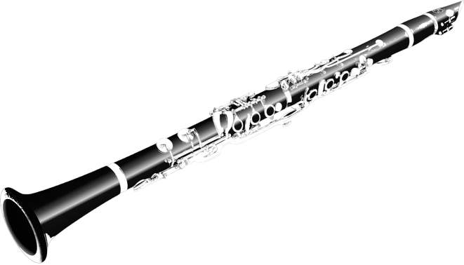

The clarinet is a single-reed woodwind instrument. It typically has a cylindrical bore and a flared bell, and is usually made of African blackwood (grenadilla), according to Britannica. The sound is produced by blowing air across a single reed attached to the mouthpiece, causing it to vibrate. Single-reed instrument: The sound is produced by the vibration of a single reed. Cylindrical bore: Unlike conical instruments like the saxophone, the bore of the clarinet is mostly cylindrical until the bell flares out. Wide dynamic range: The clarinet can play from very quiet (ppp) to very loud (fff). Distinct registers: The clarinet has three distinct registers: the lower chalumeau register (dark sound), the middle clarinet register (resembling a female voice), and the top register (more neutral and sharp). Wide tone range: Clarinets can play over 4 octaves. History: The clarinet is a relatively new woodwind instrument, developed from the chalumeau, a single-reed instrument. Johann Christoph Denner is generally credited with inventing the clarinet around 1700 by adding a register key to the chalumeau. Over time, more keys and pads were added to improve intonation and playability. Today, the two main fingering systems used are the Boehm system (developed by Hyacinthe Klosé and Louis-Auguste Buffet based on Theobald Boehm's flute mechanism) and the Oehler system (favored in German-speaking regions). Types of Clarinets: The clarinet family includes a variety of instruments of different sizes and pitches. Some of the common types include: B♭ Clarinet: The most common type, usually referred to simply as "the clarinet". A Clarinet: Similar to the B♭ clarinet but pitched a half step lower. E♭ Clarinet: A smaller, higher-pitched clarinet. Alto Clarinet: Pitched lower than the B♭ clarinet, with a bent metal neck and bell. Bass Clarinet: Sounds an octave lower than the B♭ clarinet, with a bent neck and bell. Contrabass Clarinet: One of the largest clarinets, with a deep, rich sound. Famous Clarinetists: Classical: Martin Fröst, Sabine Meyer, Richard Stoltzman. Jazz/Swing: Benny Goodman, Artie Shaw, Woody Herman.
